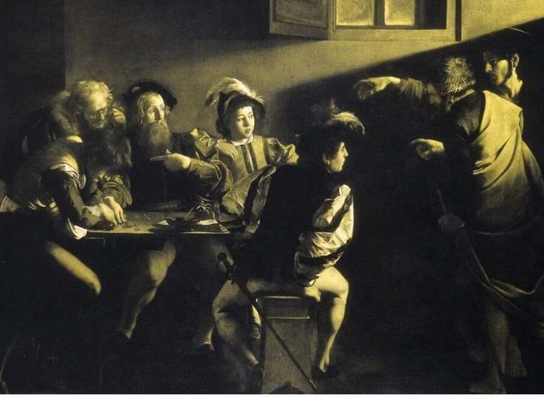

The Calling of St. Matthew, Caravaggio
Return to the Beginning.
The top left is Normal Perspective.
The top right is the view of Deuternopia/Green-Blindness.

The bottom left is the view of Protanopia/Red-Blindess.
The bottom right is the view of Tritanopia/Blue-Blindness.